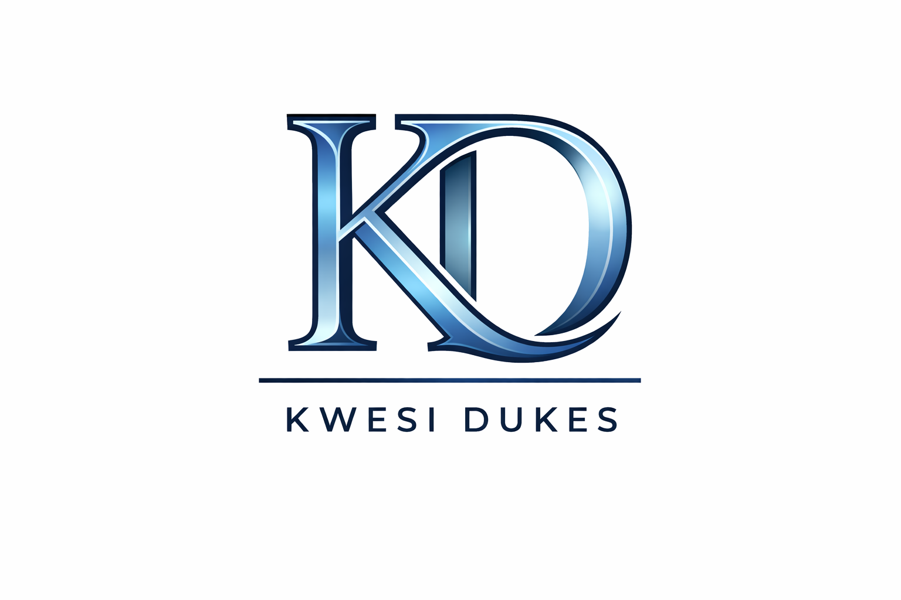
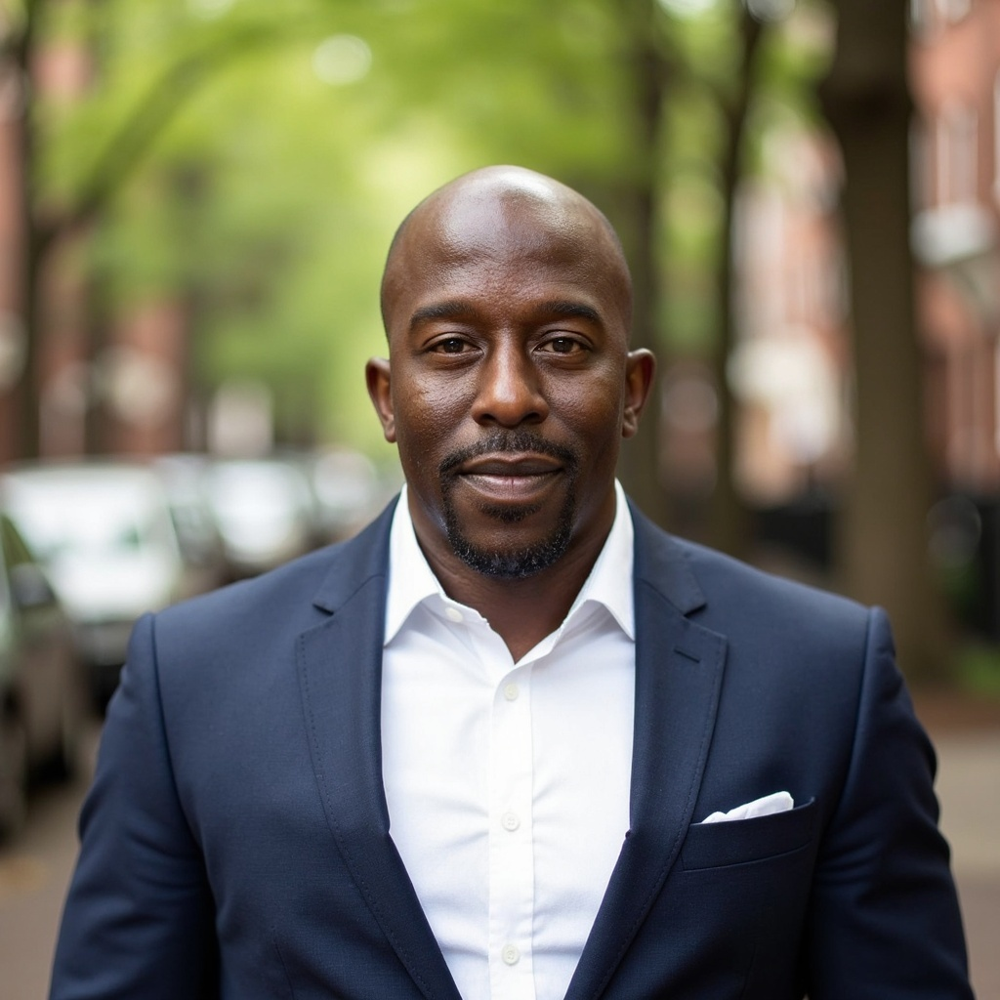
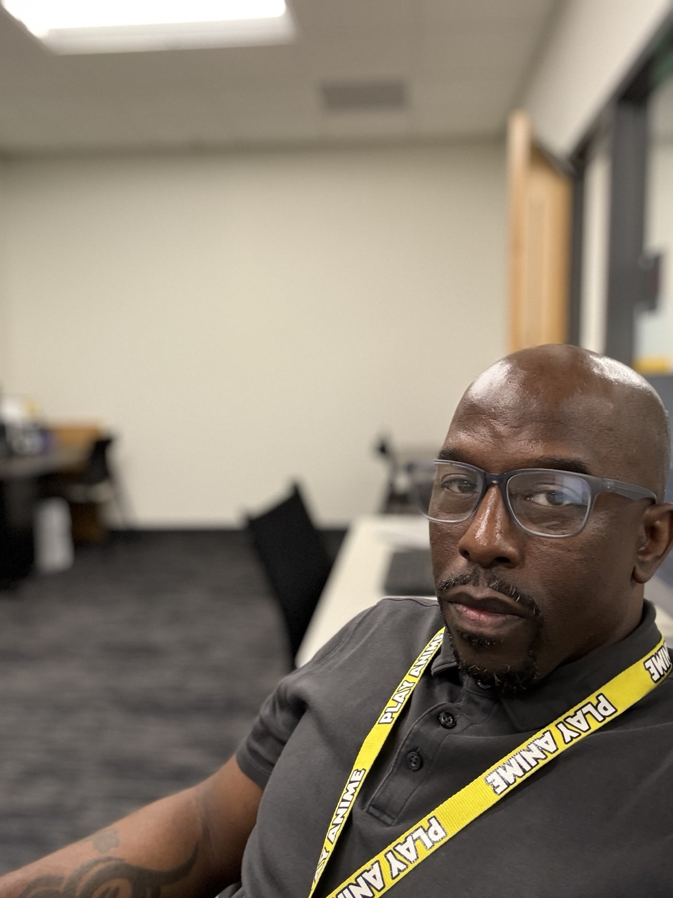
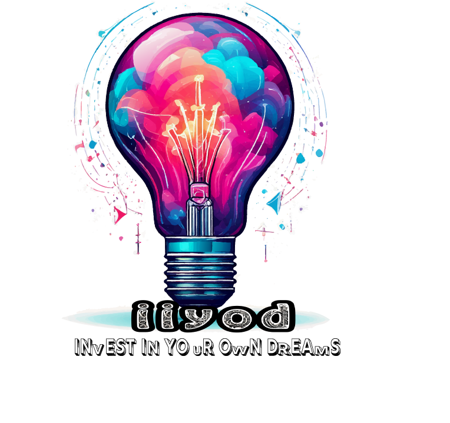
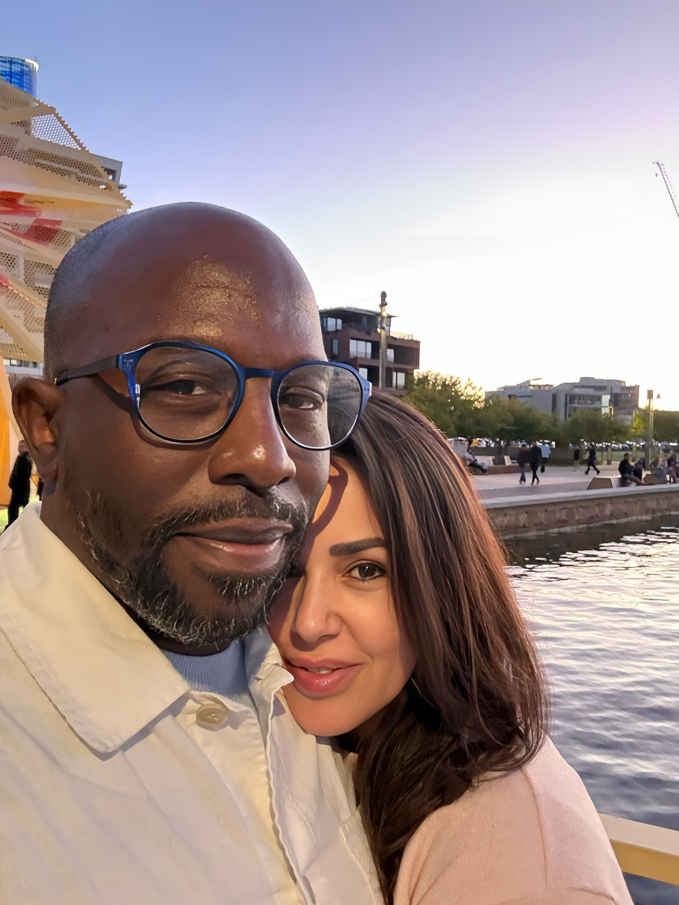
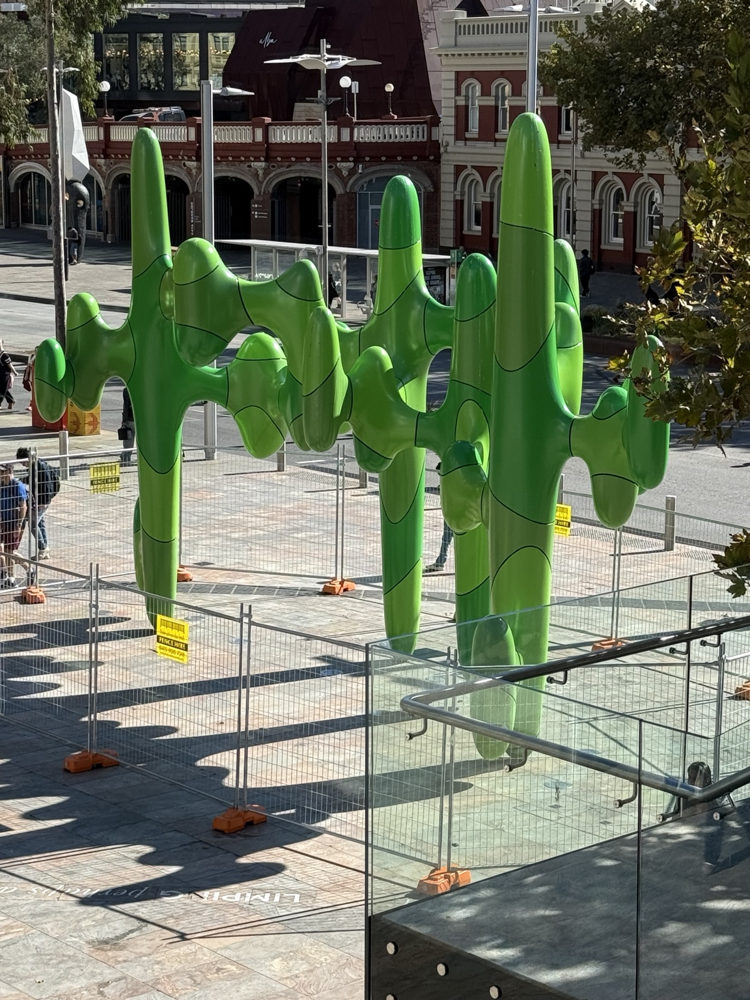

Microsoft 365 & Systems
Microsoft 365 administration, Entra ID, Exchange Online, SharePoint, Teams, OneDrive, licensing, identity, and access management.

Kwesi DukesThe Nomad Builder
I’m Kwesi Dukes — an IT professional, creative technologist, music producer, and lifelong learner building a new chapter in Perth, Western Australia.

About Kwesi
I was born in Sumter, South Carolina and spent part of my early life in Atlanta, Georgia before being raised in Irmo and West Columbia, South Carolina. I grew up in the golden era of Saturday morning cartoons, video games, trading cards, comic books, novelties, and competitive basketball.
Technology captured my imagination because I’ve always been fascinated by communication from a distance and the possibilities it creates. I love building from scratch — from hardware to the GUI — and using computation to solve real problems.
Music has always been part of my story. My father and Bill Pinkney of The Original Drifters shaped my connection to music early, so producing, engineering, and writing became a natural extension of who I am.
Let Go and Let God.
Professional One-Sheet
Microsoft 365 administration, Entra ID, Exchange Online, SharePoint, Teams, OneDrive, licensing, identity, and access management.
Power BI, Excel, SQL, reporting, business systems, data analytics, and translating needs into practical solutions.
Audit remediation, MFA, compliance-focused reporting, endpoint governance, security controls, and risk-aware technology support.
Exploring how AI can support governance, productivity, creativity, research, and better business outcomes.

How I show up
I want people to remember me as someone who made the challenge fun, stayed dependable, and helped move the project forward with care, creativity, and service.
Creative Identity
Super Chef is my music identity — rooted in hip hop and R&B, built through production, engineering, writing, and the desire for my music to be remembered. iiyod represents design, innovation, and creative technology.


Western Australia
In 2026, I moved to Perth, Western Australia for love and legacy. After 45 years in America, moving across the world did not feel impossible — it felt like the next chapter for a lifelong nomad. Australia represents safety, opportunity, contribution, and building a life with my wife, Yas.


Personal Notes
Connect
For Perth opportunities, governance work, consulting conversations, music, creative projects, or collaborations, reach out anytime.